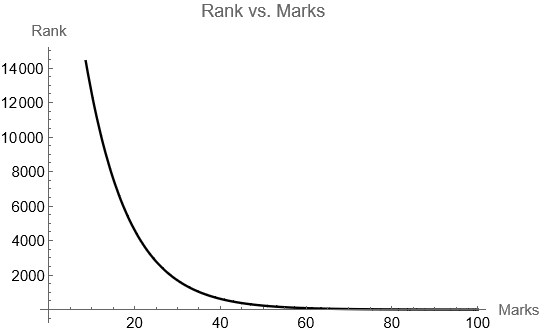
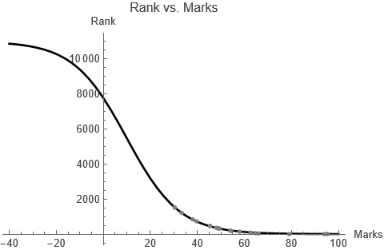

Logistics of IITJAM 2025
22 March, 2025
Introduction
The logistics growth model is defined by the differential equation
$$R'(m) = r \, R(m) \left(1 - \frac{R(m)}{K}\right)$$
with R(0) = R0, where K is the capacity of R(m), and r is the rate at which R(m) changes with respect to m. We are denoting the rank at marks m by R(m). Then, the value of K will be 11000 (approximately the number of students, and r is to be estimated. When R(m) > 1, the rate of change will be negative. As R(m) goes to 1, [R’(m){.math .inline} will tend to 0. We solve this system along with initial data R(33.33) = 1212 (rank-marks pair corresponding to one of the candidates) using the Mathematica code
DSolve[{R'[m] == r R[m](1-R[m]/K), R[33.33] = 1212}, R[m], m]to get
$$R(m) = \frac{11000 e^{mr}}{e^{mr} + 8.07591 e^{33.33 r}}.$$
The overall dynamics then are shown in figure 1, with a dummy value of r.

Simulation
We use the data extracted from 20 actual result score-cards found online (table 1) to estimate the value of r in (1). Using NonlinearModelFit command of Mathematica, we receive r = 0.0828338. Using this value, we plot the correct graph in figure 2.
| Marks | Rank | Marks | Rank |
|---|---|---|---|
| 30.33 | 1521 | 48.67 | 336 |
| 33.33 | 1212 | 54.33 | 187 |
| 79 | 4 | 54 | 194 |
| 58 | 140 | 62.67 | 86 |
| 95.33 | 1 | 49.33 | 319 |
| 94 | 2 | 30.33 | 1521 |
| 45.44 | 467 | 39.67 | 734 |
| 48 | 364 | 45.33 | 467 |
| 38 | 841 | 49.33 | 317 |
| 66 | 44 | 64.67 | 57 |

The model can be used to predict rank of varying marks, as shown in table 2.
| Marks | 10 | 20 | 30 | 40 | 50 | 60 | 70 | 80 | 90 | 100 |
|---|---|---|---|---|---|---|---|---|---|---|
| Rank | 5465 | 3174 | 1570 | 704 | 300 | 125 | 51 | 21 | 8 | 3 |
Of course, these are only approximate results, yet fairly accurate.
This article is also available in PDF format at this file. A notebook can also be found here.
References
- Barnes, Belinda, and Glenn R. Fulford. Mathematical Modelling with Case Studies: A Differential Equations Approach Using Maple and MATLAB. 2nd ed., CRC Press, 2009.
Thanks for reading. Return to see all blog posts, or to the home page.